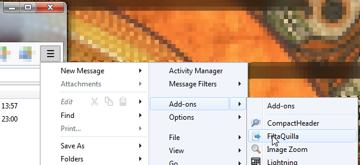
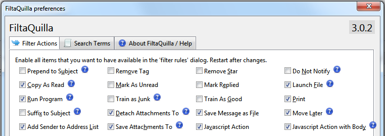
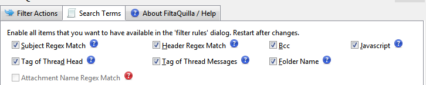
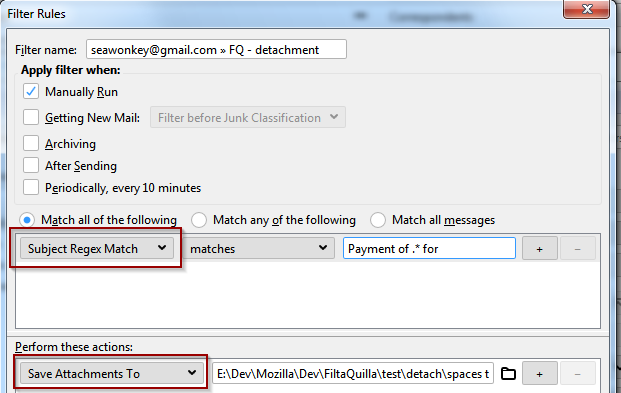

Download on addons.thunderbird.net
FiltaQuilla is compatible with Thunderbird 68
FiltaQuilla provides a variety of additional message filter actions and search terms. This description applies to version 1.1.0.
By default, only a few of the new actions and terms enabled. You can selectively enable and disable the various filter actions and search terms in the Addons Options dialog (Tools/Addons, select Extensions section, then select the Options box on the FiltaQuilla addon).
Bug Tracker
Please go to the github FiltaQuilla Issue Tracker on github for reporting bugs!
Configuration
Thunderbird 60 and later:
Once you have installed FiltaQuilla, you can use the Add-ons menu on the "Main / Hamburger" menu
to configure the additional filtering options:

In the main menu on top of the Thunderbird window, you will find it in
Tools > Addon Options.
In older versions of Thunderbird, open the Add-ons manager, select the extensions tab on the left and find the Options button on the FiltaQuilla row.
You can then activate the additional actions / filter conditions for availability in the filter
editor.


The selected features will then be available as additional options
on the Search / Actions drop downs.

Filter Actions
Here are the additional filter actions on offer:
Prepend/Suffix to Subject: add some text to the beginning/end of the subject line. WARNING: this sets the value of the subject in the message database, not in the message itself. Under a variety of circumstances, such as requesting “reindexing” of a folder, the subject will be rewritten from the message, and the changes added by the filter will be lost.
Remove Tag: Remove a specified tag from the message.
Remove Star: Remove the star (sometimes called “flagged”) from the email.
Do Not Notify: Disable notifications for this message.
Copy as Read: Copy the message, leaving the original Read status unchanged, but marking the copy as Read. This action relies on features that are only available when the filter is applied manually. The item will only appear when “Apply filter when” is set to “Manually Run” in the message filter editor.
Mark as Unread: Mark the message as Unread.
Mark Replied: Mark the message as Replied.
Launch File: Using the operating system, launch a
particular file. This method has the same effect as if you
double-clicked the file, so for executable files—it will just run the
file without any parameters. It may not be implemented on some
platforms. This action includes two icons, as well as a text field
pointing to the file. The folder icon  will allow you to browse for the file to launch. The folder-go icon
will allow you to browse for the file to launch. The folder-go icon  will launch the file to allow you to test the results.
will launch the file to allow you to test the results.
Run Program: This action takes the file name of an executable, and runs a new process with that file. It differs from Launch File in that “Launch” will use a file’s type to decide what program to run, while in Run File the program to run is explicitly given.
In addition, Run Program can accept parameters. The text that is generated when you select a file to run in the filter editor may be modified by you to include a set of parameters to run, separated by commas. The whole line is a little difficult to see and edit because of the limited space available, but if you select the text and move your cursor to the right, you can edit the parameters that are sent to the process when it is run.
The parameters that are used to run the file can include information from the message header. Special character values beginning and ending with “@” are used to denote replaceable parameters that are sent to the process to run. For example, a file line like this:
C:\PROGRAMS\runme.exe,@SUBJECT@,@MESSAGEID@
will run the program “runme” with two parameters, the first being the subject and the second the message id. This is, in fact, the default parameters that are used when a file is selected. The full list of available substitutable parameters is:
// @SUBJECT@ subject // @MESSAGEID@ message Id // @AUTHOR@ author // @RECIPIENTS@ recipients // @DATE@ date (local string) // @CCLIST@ cc list // @DATEINSECONDS@ date in seconds // @MESSAGEURI@ URI for the message // @PROPERTY@somedbproperty@ uses .getStringProperty(“somedbproperty”)
The last item actually has a second internal substitutable parameters. It is intended to be used with a custom DB header, such as “X-SPAM”. You must first define the custom db header by adding that header to the preference mailnews.customDBHeaders, then you can use that header in this parameter list.
Train As Junk / Train As Good
Standard filter actions can mark emails as junk or good, but this does not train the bayesian filter with the tokens in that email. These actions not only mark the emails, but also use them as training for the bayesian filter.
The issue described in “Combining Moves with Complex Actions” below applies to this action.
This action prints the email on the default printer.
The action has a side effect,which was required because of limitation of the core code. By default, when you request to print an email, the software presents you a dialog to select the printer to use. We obviously don’t want that in a filter action, but the only available choice is to always print immediately to the default printer. So the first time that the Print action occurs in a filter, we set the global setting that will cause all printing (including those not done by a filter action) to immediately print to the default printer. This is set back to the default value on startup.
The issue described in “Combining Moves with Complex Actions” below applies to this action.
Add Sender to Address List
This action shows a list of all address books and associated email lists, and you may add the sender to either an address book or email list with this action. If the email already exists in the list, it is not added.
Save Attachments To
This action saves all email attachments for the matched email (if it has any) to the selected folder, using the name provided by the attachment. If the file already exists, a unique variant of the file name will be used, typically by adding a number to the end of the name.
The issue described in “Combining Moves with Complex Actions” below applies to this action.
Detach Attachments To
This action detaches all email attachments for the matched email (if it has any) to the selected folder, using the name provided by the attachment. If the file already exists, a unique variant of the file name will be used, typically by adding a number to the end of the name. A “detach” differs from a “save” in that, after detach, the message is rewritten to remove the attachment, which can reduce the disk space required to store the message.
The issue described in “Combining Moves with Complex Actions” below applies to this action.
Javascript Action / Javascript Action (with body)
These actions allow execution of arbitrary javascript as the action. The javascript receives the variables defined in the “apply” method of nsIMsgFilterCustomAction.idl, using the same names. The most important of these is the array of message headers that represent the list of messages to apply the action to.
As a trivial example, to prepend the text “[Hello world]” to the front of each messages’s subject, use the following javascript:
for (let index = 0; index < msgHdrs.length; index++)
{
let hdr = msgHdrs.queryElementAt(index, Ci.nsIMsgDBHdr);
hdr.subject = "[Hello, world] " + hdr.subject;
}
The “Javascript Action with Body” delays the application of the filter until the body has been downloaded. In theory you could then access the body, and do operations dependent on it. In practice this is difficult to do, so this action might be best considered experimental.
Save Message as File
The location of the file is selectable in the filter definition. The file is given an automatic name based on the subject. If a file of that name already exists in the folder, then a unique name is generated by adding a number to the end of the file name.
(Beginning in Filtaquilla version 1.3.0): By default, the message is saved with the default Thunderbird extension .eml The filter will use a different extension if you append to the file spec a | followed by the extension. So for example if the filespec is C:\temp\saveas\ for the default extension type, change this to C:\temp\saveas\|txt and the extension will be “txt”.
The issue described in “Combining Moves with Complex Actions” below applies to this action.
Move Later
Filter actions that require the message body do not work correctly when a move is also requested for the message. Move Later is one solution to this problem, though it currently only works reliable with the Save Message as File action. So if you use that action combined with a move, try Move Later instead of the normal move, and the combination should work reliably.
Search Terms
The custom search terms added in FiltaQuilla can be used not only in filters, but also in other search contexts that use Thunderbird’s traditional search. That includes the advanced search dialog, as well as definitions of virtual folders. Most of these new search terms are really targeted toward virtual folder definitions. (TB 3.0 also has a newer SQL-based search technology called gloda. FiltaQuilla does not use that technology).
BCC
This is simply the BCC address field. This value is really only stored in Send folders.
Tag of Thread Head
This search responds to the tag that is on the parent message of the thread, rather than the message itself.
Tag of Thread Message
This search looks for any messages near the current message, and searches their tags. “Near” always includes the tag parent, but also includes a number of messages on either side of the message in the thread. By default, the code examines +/- 10 messages near the current message, but that number can be changed by setting the value of the preference “extensions.filtaquilla.maxthreadscan”. The default value for maxthreadscan is 20, and the code will examine nearby messages within +/- (maxthreadscan/2) of the target message for the search.
This search may be slow, so you may find a considerable delay when this search term is used.
Warning: the next three search terms are targeted toward geeks only.
Subject Regex Match
This matches the subject with a regular expression that is entered in the search field. (If you don’t know what a regular expression is, then this search term is not for you.)
If your regular expression has no flags, it can be entered without slashes, for example “findme”. But if you want to add a flag (for example case insensitivity), then surround the term with slashes and append the appropriate flags (for example “/findME/i”).
Since this code is done using Mozilla javascript, regular expressions should use the Mozilla regex syntax, described here. You can also test your search expressions at this Online Regex Tester - just make sure you select the javascript option on the left.
Header Regex Match
This matches any available property of the message header database with a regular expression. (Once again, if you don’t know what a regular expression is, this is not for you.) The format of the text in the search is PROPERTY:REGEX (that is, delimited with a ‘:’ character). The property is one of the available properties that are set on the nsIMsgDBHdr object associated with the message. OK, you probably don’t know what those are, but some common values are:
“subject”, “sender”, “message-id”, “references”, “recipients”, “date”, “size”, “flags”, “priority”,
“label” (obsolete TB 1.5 term), “statusOfset” (yes it is really spelled that way), “ccList”, “bccList”,
“msgThreadId”, “threadFlags”, “threadId”, “threadSubject”, “msgCharSet”, “threadParent”,
“junkscore” (either null, 0, or 100), “junkpercent”, “junkscoreorigin”, “threadNewestMsgDate”,
“msgOffset”, “offlineMsgSize”.
It’s really beyond the scope of this page to describe what each of these is.
You can also request that any existing header in a message (for example X-SPAM-STATUS) be added to the database automatically, by setting the value of the desired header in the mailnews.customDBHeaders preference.
So as an example, I’ve added x-spam-status as a custom db header, and now I can do a regex looking for “SUBJ_ALL_CAPS” in that by creating a “header regex” search with the value:
x-spam-status:SUBJ_ALL_CAPS
and then I will search for all x-spam-status headers that contain “SUBJ_ALL_CAPS”. This example is a little contrived, because you could do the same thing with the older custom header search in TB, but the difference is that you could use something more complex than simply a string if you wanted as your regex.
If your regular expression has no flags, it can be entered without slashes, for example “findme”. But if you want to add a flag (for example case insensitivity), then surround the term with slashes and append the appropriate flags (for example “/findME/i”).
Folder Name
Matches message based on the folder name. This can be useful in at least two cases:
- Filter are applied manually, but certain actions should not be executed in all folders
- For IMAP only with incoming filters, it is possible to allow filters to be executed on particular folders other than the inbox. In those cases, the Folder Name search can be useful to restrict the application of certain actions to messages that were moved to a particular folder, possibly by another filter.
Javascript
This search term allows evaluation of a javascript expression (that
could be many lines long) that you could use to setup a search term. You
can input the javascript in a multiline textbox by clicking on the
script edit icon .
The javascript will have as input the variable “message” that is an
nsIMsgDBHdr XPCOM object that contains the header database record for
the message. The value of the expression (or the last expression line
executed) will be evaluated to be true or false, and if “true” the
message matches.
One good use for this is to setup boolean expressions that are beyond the power of the standard search editor. As an example, suppose you wanted to setup a virtual folder that shows ((tag CONTAINS critical) (OR) (tag contains duesoon)) AND (tag doesntContain DONE). You could setup a simple javascript search term with the following:
let tags = message.getStringProperty('keywords');
(/critical/.test(tags) || /duesoon/.test(tags)) && !(/done/.test(tags));
With tags, be careful with the 5 predefined tags (Important, Work, Personal, To do, Later) because their internal values are not the text, but “$label1” – “$label5” respectively. Also, if you rename a tag, the string in keywords does not change.
Here’s a more complex example. I am testing to see if the number of trained good messages is less than the number of trained junk messages (which I use prior to doing an auto train):
// match if junk training exceeds good
let junkService = Cc["@mozilla.org/messenger/filter-plugin;1?name=bayesianfilter"]
.getService(Ci.nsIJunkMailPlugin);
junkService instanceof Ci.nsIMsgCorpus;
let kJunkTrait = junkService.JUNK_TRAIT;
let kGoodTrait = junkService.GOOD_TRAIT;
let msgCount = {};
junkService.corpusCounts(kJunkTrait, msgCount);
let junkCount = msgCount.value;
junkService.corpusCounts(kGoodTrait, msgCount);
let goodCount = msgCount.value;
Cc["@mozilla.org/consoleservice;1"]
.getService(Ci.nsIConsoleService)
.logStringMessage('junkCount: ' + junkCount + ' goodCount: ' + goodCount);
(goodCount < junkCount)
Inherited Properties
By default, message filters in IMAP are only applied to the INBOX. If you have some server-side filters, there could be times when you also want to apply filters to other folders. FiltaQuilla includes an inherited folder property “Apply Incoming Filters” that you may use to specify additional folders that will have filters applied. See the post “Inherited Folder Properties – revisited” for more information about using inherited folder properties.
Combining Moves with Complex Actions
Certain filter actions that require access to the message body do not work well when combined with a filter that also moves the message. In that case, a race occurs to see if the complex action can be applied before the move deletes the message from the folder.
You have two choices available to workaround this issue:
- Move Later action. The Move Later action will work well with the Save Message as File action, and may work with other actions. Use this in place of the normal message move action.
- Folder-specific actions. This is a little more complex to setup, and only works on IMAP, but should work reliably once setup. The idea is that you apply the move first, and then when the message arrives in the destination folder, then you apply the complex action. You need to do all of the following for this to work:
- Enable “Apply Incoming Filters” for all folders that are destinations of a message with a complex action. See “Inherited Properties” above for how this is done.
- Define a normal filter that moves the message. It may be necessary to restrict application of this filter to the inbox using the “Folder Name” search term.
- Define a second filter that will be used to execute the complex action. Restrict that application of that filter using a Folder Name search term. So, for example, you could add a search term for the complex action “Folder Name Isn’t Inbox”.
This setup will attempt to run your filters twice, so it may necessary to restrict other filters as well using the “Folder Name” search term to prevent having them apply more than once.
Sorry this is so complex, but at least now there is some available method to be used to setup complex filters with actions.
Future Functions
Check Attachment names with regular expressions
Unfortunately this function cannot be currently implemented. As long as the filter mechanims in Thunderbird is synchronous, we cannot read attachment info during filtering - since we need this as a condition for further actions in the filter queue. Thunderbird wants to eventually make the filtering mechanism asynchronous but at the moment there is no concrete plan for this.